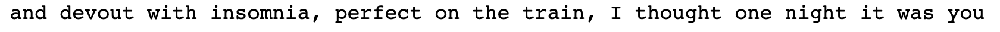

Thank you to Emma Rae for the open source code to the Code Societies Website that helped me build the foundation for this Digital Love Languages care package.
Thank you to Zoe Sandoval for sharing your experience and code in taking form inputs and storing that in a Google Sheets database, then reading and doing something with that data on Glitch. This will be the project I continue after this class, so that people can make care packages for their future selves and/or the people they love.
Thank you to Amber Officer-Narvasa for your poetic words that brought life to how I could describe the feeling of giving and receiving a care package online.
Thank you to Max Fowler and Melanie Hoff for patiently responding to my countless troubleshooting code questions and helping me continually stretch and grow to new ideas and ways of thinking, feeling, and expressing love online through art, poetry and code.
Thank you to my digital love languages class for sharing and cultivating a thoughtful and generous space that loves, heals, and affirms. Your presence and your questions gave life to what’s possible, and you’ve expanded my eyes, my mind and my heart forever.
An online class at the School for Poetic Computation stewarded by Melanie Hoff, Max Fowler, Adina Glickstein, and Amber Officer-Narvasa.
As our daily activities and closest relationships become increasingly bound up with corporate systems of surveillance and exploitation,
we explored and cultivated code as a love language that can be gentle, healing, and intimate.
How do we want to live in a post COVID-19 world, and what role do we want technology to play?
This class was a call to action for expanding computation’s capacity for fostering interdependence and feeling,
and technology was unpacked as a social process, not only a logic or material, regarding code as a craft and medium capable of expressing the full range of feeling and desire.
Through the course of 10 weeks together, we built poetic tools for online communion through a re-introduction to computers.
We built small and personal software for affirming one another across physical distance.
We built an internet that loves.
A BeautifulLoveSoup
an algorithm that generates new love poems trained on a Markov model of love poems web scraped from the poetry foundation with BeautifulSoup and Selenium

“Love, not just as a feeling one has,but also as a marker for a whole constellation of things that one wants to experience extremely.
Love approximates a space to to which people can return, becoming as different as they can be from themselves without being traumatically shattered; it is a scene of optimism for change, for a transformational environment.”
- Lauren Berlant
💌 💌 💌 💌 💌 💌 💌 💌 💌 💌 💌 💌 💌
To my digital love languages class
💌 💌 💌 💌 💌 💌 💌 💌 💌 💌 💌 💌 💌